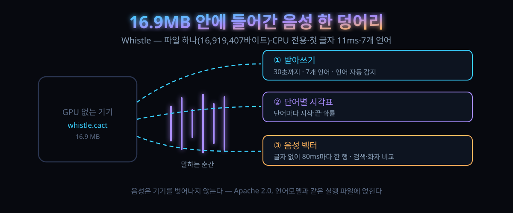

10/2 공개된 음성인식 16.9MB — 7개 언어·첫 글자 11ms, GPU 없이 도는 이 작은 모델이 지갑에 넣은 세 가지

결론부터 말하면, 이 모델의 값어치는 '작음'이 아니다. 같은 파일 안에서 세 가지가 동시에 나온다는 데 있다. 받아쓰기, 단어별 시각표, 그리고 글자로 바꾸지 않은 음성 벡터. 셋 다 기기 안에서 돈다.
10월 2일, Cactus Compute라는 팀이 Whistle이라는 음성인식 모델을 공개했다. 사흘 만에 해커뉴스 표 515, 댓글 118개.
작은 음성 모델이 어디 한 둘인가. 그럼에도 스레드가 이 온도를 낸 건 크기 기록 갱신 때문이 아니다. '이 정도면 내 앱에 통째로 심어도 되는가'라는 질문이 댓글창 가득 붙었기 때문이다.
30초 요약
| 항목 | 내용 |
|---|---|
| 무슨 일 | 10월 2일 공개된 음성인식 모델. 파일 하나(16.9MB, 실측 16,919,407바이트)에 모델 전체가 담기고 CPU에서만 돈다. 라이선스는 Apache 2.0 |
| 세 가지 일 | ① 받아쓰기 — 16kHz 모노, 한 번에 30초까지, 7개 언어(영어·독일어·프랑스어·스페인어·이탈리아어·네덜란드어·폴란드어), 언어는 자동 감지 ② 단어별 시작·끝 시각과 확률 ③ 전사 없이 음성 벡터만(80ms마다 한 행) |
| 속도 | 공개 자료 기준 첫 토큰까지 11ms. 10초짜리 음성 기준 측정은 Apple M4 Pro에서 자체 엔진(beam 5) 기준 |
| 정확도 | LibriSpeech test-clean·test-other, SPGISpeech, Earnings-22, FLEURS 평균에서 whisper base를 앞선다고 발표. 반대로 TED-LIUM·AMI·MLS 평균은 whisper가 앞선다고 함께 명시. WER 측정은 음성 86,174개에서 |
| HN 온도 | "영어가 이 정도면 실전"이라는 감탄과 "스페인어는 없는 단어를 만든다"는 불만이 같은 스레드에. 에코 쇼를 아마존 클라우드로부터 끊어낸 사람이 자기 집에 붙인 후기, "크기가 문제가 아니라 우리 아버지를 못 알아듣는 게 문제"라는 반박이 동시에 달렸다 |
| 한국어는 | 지원 목록에 없다. 이 글의 실전 편은 '한국어는 어쩔 수 없이 남는 자리에 붙이는 보조 트랙' 전제다 |
1. 무엇이 터졌나
모델을 열어보면 파일이 둘 나란히 들어 있다. 학습 가중치를 담은 체크포인트가 220,618,620바이트(약 210MB), 실제 배포용 파일 whistle.cact가 16,919,407바이트. 같은 모델인데 부피가 13배 벌어진다. 차이를 만든 건 양자화 한 가지가 아니다. 같은 팀의 언어모델 Needle이 이미 쓰던 파일 통·양자화·SIMD 커널을 음성 모델이 그대로 빌려 썼다. 그래서 언어모델이 도는 실행 파일에 음성 모델을 옆으로 얹어도 된다. 실행 파일 두 개, 런타임 두 개가 아니라 하나에 두 모델이다.
내부는 발표 자료 기준 이렇게 잡힌다. 소리를 25ms 창·10ms 이동으로 80개 로그-멜 축에 썰면 30초가 3,000프레임. 합성곱 앞단이 이를 80ms당 1프레임, 375개까지 줄인다. 그 뒤를 인코더 8층이 읽는데, 여기서는 소리를 앞뒤로 함께 본다. 글자로 바꾸는 건 디코더 8층의 몫이고, 블록 구성은 Needle 것과 같다. 층수를 2층까지 낮춰 로드할 수 있어, 같은 파일에서 저사양 기종용을 골라 쓸 수 있다.
음성 모델 특유의 부분은 각 층에 하나씩 붙은 게이트 달린 크로스 어텐션이다. 소리 특징을 디코더가 매 층 읽되, 소리 쪽 계산은 클립이 들어왔을 때 한 번만 하고 그 결과(8개 층 × 375프레임)를 통째로 붙든다. 빔 5개를 돌려도 소리를 다섯 번 다시 읽지 않고 전사 후보 5개만 늘리는 이유다.
세 번째 기능은 이 구조에서 공짜로 나온다. 인코더 출력이 이미 80ms 간격으로 정리돼 있으니, 글자로 바꾸지 않고 그 행만 꺼내 쓰면 음성 벡터가 된다. 받아쓰지 않고 소리끼리 비교하는 용도, 특정 화자 찾기나 소리 검색에 쓴다.
라이선스는 Apache 2.0, 가중치·엔진·소스가 전부 공개 저장소에 있다. 상업 제품에도 붙일 수 있게 문을 열어둔 배치다.
2. 왜 대단한 논점인가
① 경쟁 상대가 '가장 큰 모델'이 아니라 '가장 흔한 작은 모델'로 정해졌다
비교표에서 이 모델이 앞선다고 밝힌 상대는 초거대 모델이 아니다. 파라미터 7,260만 개짜리 whisper base(fp32)와 영어 전용 소형 모델이다. 이 팀은 16.9MB로 70MB짜리를 일부 구간에서 넘었다고 주장하고, 넘기지 못한 구간(프랑스어권 음성, 회의 음성 등)도 표에 함께 박아 뒀다. 상대 수치는 원저자가 공개한 값을 그대로 옮겨 비교 기준을 공개한 셈이다. 눈여겨볼 건 이 비교의 의미가 '기적'이 아니라 '임계선'이라는 점이다. 한때 70MB는 스마트폰에 넣기 애매한 크기였다. 17MB는 앱 설치 파일 안에 소리 없이 들어가는 크기다. 성능 격차가 좁혀진 게 아니다. '작다는 이유로 검토 대상에서 자동 제외되던 구간'에 성능이 처음 들어온 것이다.
② 진짜 설계 포인트는 클라우드에 음성을 안 보내도 되는 지점
처리 자체가 기기 안에서 끝나니 음성 유출면이 원천적으로 사라진다. 개인용 메모 앱보다 민감한 영역에서 먼저 쓸모가 생긴다. 병원·법무·금융처럼 음성을 외부 서버에 넘기는 것 자체가 계약 위반인 곳, 인터넷이 끊기는 현장(차량, 창고, 로봇, 야외 장비). 발표 자료도 표적 시장을 모바일·웨어러블·로봇·스마트홈·차량·마이크로컨트롤러로 적었다. 여기에 '첫 글자 11ms'가 겹치면 말하기와 동시에 글자가 튀는 체감이 나온다. 클라우드 왕복 지연이 수백 ms에서 시작하는 것과 구조가 다르다.
③ 음성 처리의 고전적 약점(이름·브랜드)을 사전 편향으로 정면 돌파
자기네 제품명, 사용자 이름, 지명처럼 사전에 없는 단어를 검색 단계에서 밀어주는 기능(keyword biasing)이 기본으로 붙었다. 음성인식의 오기는 대부분 고유명사에서 터지는데, 이걸 후처리 대신 탐색 단계에서 건드린다. 대형 서비스가 이걸 못 넘은 이유가 연산량보다 편성 난제였다는 점에서, 소형에 붙은 게 반갑다.
④ 그런데도 이 글의 주인공은 '정확도'가 아니다
댓글창 다수결은 "이 크기 모델의 자리는 받아쓰기가 아니라 명령어"라는 쪽이었다. 자유 문장을 다 받아 적으려면 여전히 큰 모델이 필요하다. 다만 "부엌 불 꺼", "거실 22도"처럼 경우의 수가 정해진 명령은 17MB로도 충분하다는 것. 지갑에 세 가지 중 마지막(음성 벡터)을 넣은 것도 그래서 전략적으로 읽힌다. 자유 문장은 대형 모델에 맡기고, 기기는 판별·검색·명령만 맡는 분업이 처음부터 설계에 들어가 있다.
3. 바로 써먹기
시작은 파이썬 패키지 하나다. 받아쓰기 자체는 3줄이면 돌아간다.
pip install cactus-needle
import needle
r = needle.transcribe("clip.wav", word_timestamps=True,
keywords=["강화동", "김철수"])
print(r["text"], r["language"], r["first_token_ms"])
# clip.wav는 16kHz 모노. 다른 샘플레이트·마이크 입력은 [mic] 추가 설치호출마다 본문·감지 언어·첫 글자까지 걸린 ms·그 이후 초당 토큰 수가 함께 나온다. `needle whistle compare`를 치면 같은 음성을 whisper·Moonshine 옆에 놓고 직접 재볼 수 있고, `needle whistle playground`는 마이크 입력을 바로 받아쓴다. CLI는 `needle --model whistle.cact --audio clip.wav` 한 줄. 같은 명령에 언어모델 파일을 하나 더 얹고 도구 정의를 넘기면 음성→명령 호출까지 한 번에 나온다.
내 업무에 붙는지 가르는 4단계
| 단계 | 할 일 | 판정선 |
|---|---|---|
| 1. 언어 확인 | 사용자 음성의 언어가 7개 목록에 있는지 | 한국어·일본어·중국어는 목록 밖 — 주력으로 못 쓴다 |
| 2. 문장 열림 확인 | 자유 문장 받아쓰기인가, 경우의 수 정해진 명령인가 | 명령·검색·필요 단어만 알아들으면 되는 영역이면 후보. 긴 회의록은 애초에 다른 모델 |
| 3. 상한 확인 | 한 클립 길이가 30초를 넘지 않는가 | 넘으면 잘게 쪼개야 하고, 이어지는 문장 경계에서 오류가 쌓인다 |
| 4. 직접 재기 | 자기 액센트·자기 잡음·자기 용어로 50문장 테스트 | HN 실험 기준선: 170문장 중 70 → 템플릿 제한 후 164. 편성이 정확도의 절반이다 |
명령어 모드로 좁히면 정확도가 얼마나 뛰나 — 스레드 속 실측 하나
댓글 중에는 자기 집 에코 장비를 아마존 클라우드로부터 완전히 끊어낸 사람의 실험 기록이 있다. 처음에 이 모델을 자유 받아쓰기처럼 붙였을 때 170개 문장 중 70개만 바로 알아들었다. 같은 자리에 17억 파라미터짜리 모델을 RTX 5080에 돌려선 168개였다. 포기하지 않고 이 모델에 '정해진 문형만 인식'시키는 작은 판별망을 붙이자 164개까지 올랐다. 자유 문장을 못 이기는 건 여전히 사실이지만, 명령어 범위 안에서는 GPU급 모델과 견줄 만해졌다는 기록이다. 그 판별망은 합성 발화 1만 개로 학습했다고 본인이 적었다. 이 글이 옮긴 유일한 개인 실험이고, 재현 값은 자기 환경에서 다시 내야 한다.
4. 해외 반응 쟁점
댓글 118개는 네 갈래였다.
| 갈래 | 논지 (댓글창 분위기 요약) |
|---|---|
| 영어가 좋다는 실사용 후기들 | "망치면 깨보려고 했는데 완벽히 알아들었다", "미국 동부 액센트인데도 웅얼거리면 놓친다"까지 포함해 영어권 체감은 기대 이상. 인도 액센트도 읽혔다는 후기 |
| 스페인어가 최약체 | "없는 단어를 만들어 적는다", "멕시코·베네수엘라 발음이 감지도 안 된다", 반면 카스티야 지역 발음엔 양호. 7개 언어가 같은 품질이 아닌 것은 인정하는 분위기 |
| 크기는 논점이 아니라는 반론 | "내 아버지는 뇌졸중 후 발음이라 어떤 최신 모델도 소리의 모든 걸 받아 적는다. 사전식 받아쓰기(dictation 모델)가 답이지 일반 STT의 크기 싸움이 아니다" |
| 로컬 생태계 비교표 | 자주 소환된 이름은 Handy·Parakeet·whisper large·Qwen 계열 ASR. 정리하면 "상시 받아쓰기 품질은 여전히 큰 모델이 위고, 이 모델의 자리는 앱에 심는 임베딩용". 한 사용자는 "L3 캐시에 통째로 들어가면 지연이 자릿수 단위로 준다"는 하드웨어 관점의 지지를 달았다 |
5. 마시기 전 주의
첫째, 1절·2절의 성능과 지연 수치는 전부 만든 쪽의 발표다. LibriSpeech 등에서 whisper base를 앞선다는 주장도, 뒤진다는 고백도 상대 원논문에서 옮겨온 값과 섞여 있다. 우리말 환경에서의 품질은 이 글이 확인하지 못했고, 확인 불가능하다(한국어 미지원).
둘째, 공개 자료의 WER 측정 모수 86,174개는 자기 측정이 아니라 테스트셋 규모 표현이다. 11ms는 조건(하드웨어·빔 수·클립 길이)이 붙은 값이고, 댓글창 첫날 관측과는 별개다.
셋째, 모델 파일 하나로 배포되는 것과 별개로, 엔진 설치·플랫폼별 바이너리 다운로드가 별도로 필요하다. 완전 오프라인·공기_gap 배포는 문서의 별도 절차를 봐야 한다.
넷째, 라이선스가 Apache 2.0이라고 해서 '심어 팔면 끝'은 아니다. 모델 카드의 인용 표기, 그리고 배포 시점의 파일 무결성(같은 하중의 체크포인트가 210MB나 된다는 건 그 사이에 변환 스텝이 있다는 뜻)까지는 직접 확인하는 편이 안전하다.
다섯째, 이 모델은 영어 기준의 벤치마크로 이름을 알렸다. 한국어 서비스가 주력이라면 지금 단계에선 보조(키워드 훅, 화자 검색)로만 쓰라는 게 댓글창까지 포함한 종합 판단이다.